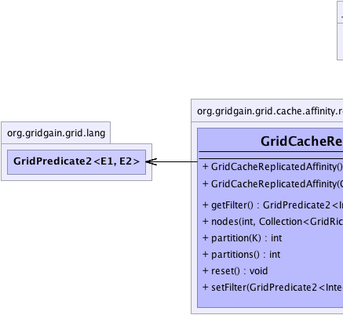
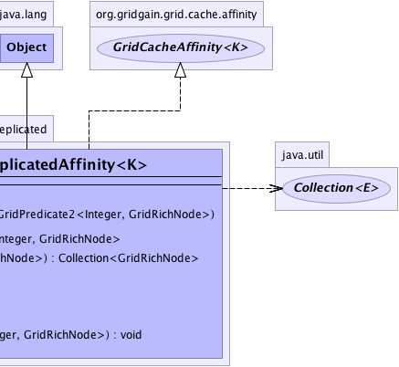

org.gridgain.grid.cache.affinity.replicated.GridCacheReplicatedAffinity<K>
org.gridgain.grid.cache.affinity.replicated.GridCacheReplicatedAffinity<K>
|
GridGain™ 3.6.0c
Community Edition |
|||||||||
| PREV CLASS NEXT CLASS | FRAMES NO FRAMES | |||||||||
| SUMMARY: NESTED | FIELD | CONSTR | METHOD | DETAIL: FIELD | CONSTR | METHOD | |||||||||
java.lang.Object
public class GridCacheReplicatedAffinity<K>
Cache affinity implementation for replicated cache. If filter is provided, then it will be used to further filter the nodes. Otherwise, all cache nodes will be used.
| Wiki | |
| Forum |
|  |  |
| Constructor Summary | |
|---|---|
GridCacheReplicatedAffinity()
Empty constructor. |
|
GridCacheReplicatedAffinity(GridPredicate2<Integer,GridRichNode> filter)
Initializes affinity with given filter. |
|
| Method Summary | |
|---|---|
GridPredicate2<Integer,GridRichNode> |
getFilter()
Gets optional affinity filter ( null if it has not bee provided). |
Collection<GridRichNode> |
nodes(int part,
Collection<GridRichNode> nodes)
Gets affinity nodes for a partition. |
int |
partition(K key)
Gets partition number for a given key starting from 0. |
int |
partitions()
Gets total number of partitions available. |
void |
reset()
Resets cache affinity to its initial state. |
void |
setFilter(GridPredicate2<Integer,GridRichNode> filter)
Sets optional affinity filter. |
| Methods inherited from class java.lang.Object |
|---|
clone, equals, finalize, getClass, hashCode, notify, notifyAll, toString, wait, wait, wait |
| Constructor Detail |
|---|
public GridCacheReplicatedAffinity()
public GridCacheReplicatedAffinity(GridPredicate2<Integer,GridRichNode> filter)
filter - Affinity filter.| Method Detail |
|---|
public GridPredicate2<Integer,GridRichNode> getFilter()
null if it has not bee provided).
public void setFilter(GridPredicate2<Integer,GridRichNode> filter)
filter - Affinity filter.public int partition(K key)
0. Partitioned caches
should make sure that keys are about evenly distributed across all partitions
from 0 to partition count for best performance.
Note that for fully replicated caches it is possible to segment key sets among different grid node groups. In that case each node group should return a unique partition number. However, unlike partitioned cache, mappings of keys to nodes in replicated caches are constant and a node cannot migrate from one partition to another.
partition in interface GridCacheAffinity<K>key - Key to get partition for.
public int partitions()
0 inclusively to
N exclusively without any gaps.
partitions in interface GridCacheAffinity<K>public Collection<GridRichNode> nodes(int part, Collection<GridRichNode> nodes)
nodes in interface GridCacheAffinity<K>part - Partition to get nodes for.nodes - Nodes to choose from.
public void reset()
reset in interface GridCacheAffinity<K>
|
GridGain™ 3.6.0c
Community Edition |
|||||||||
| PREV CLASS NEXT CLASS | FRAMES NO FRAMES | |||||||||
| SUMMARY: NESTED | FIELD | CONSTR | METHOD | DETAIL: FIELD | CONSTR | METHOD | |||||||||
|
GridGain - Real Time Big Data
|
|

|
|